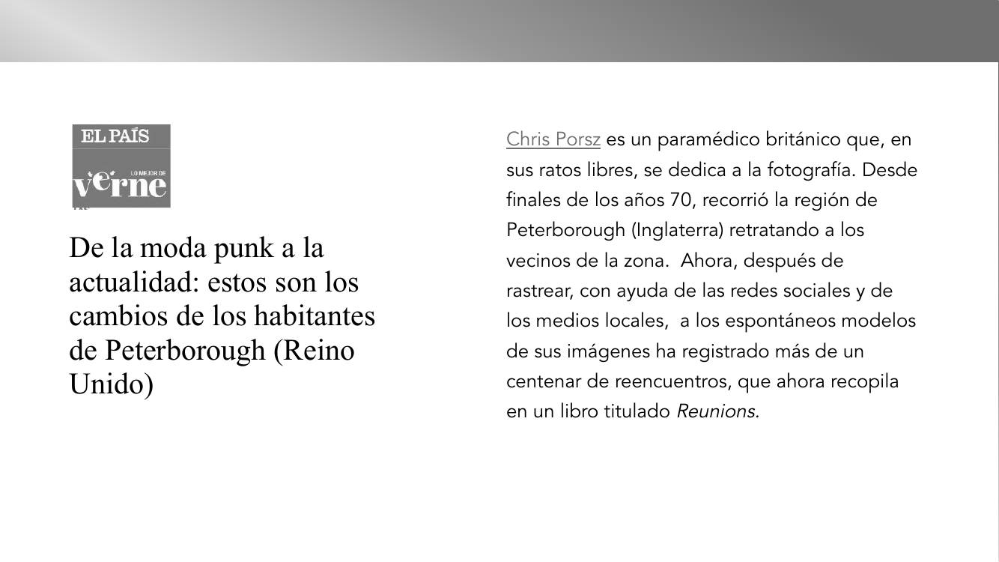
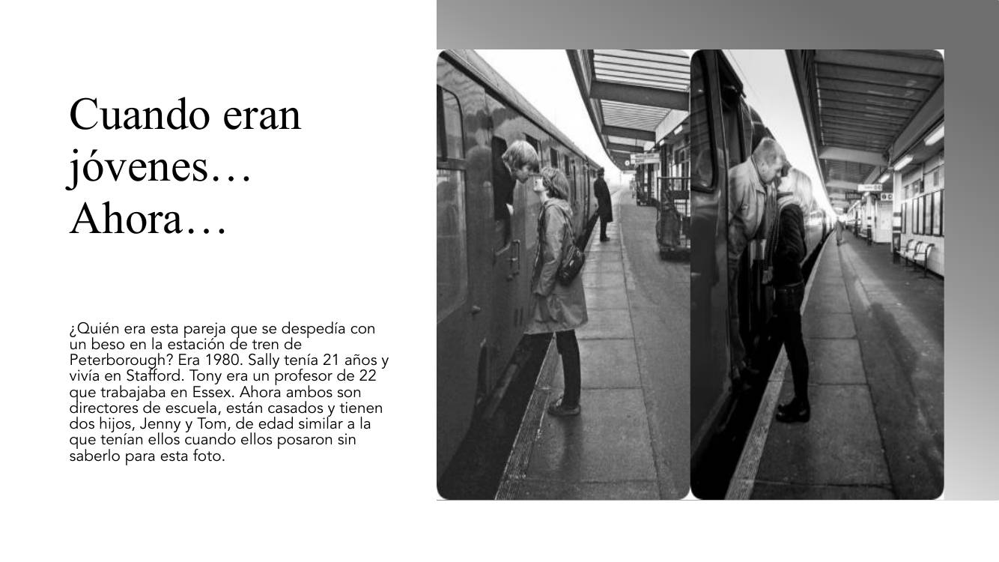
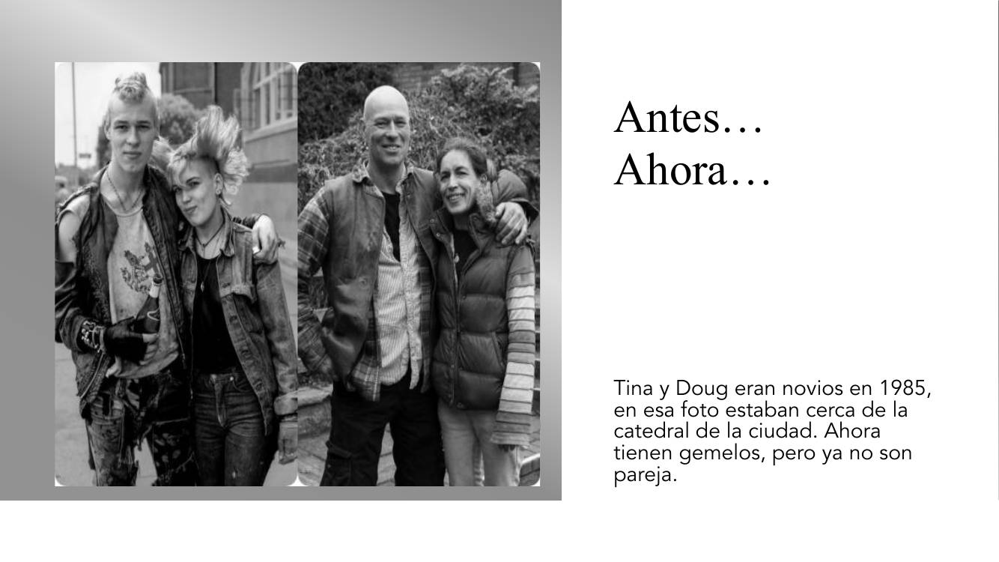
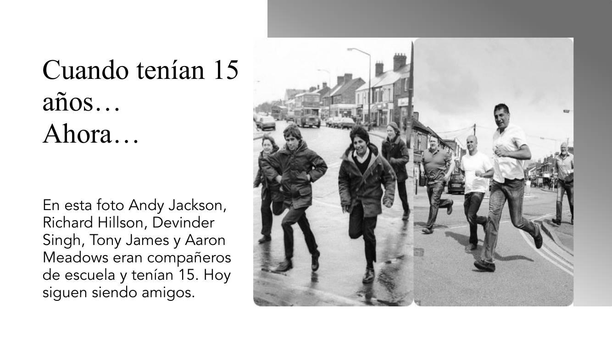
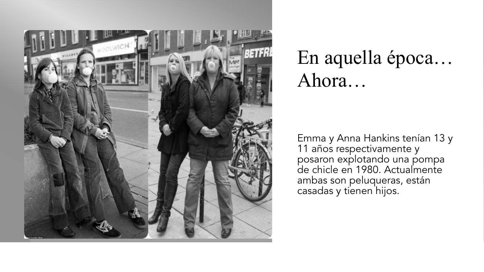
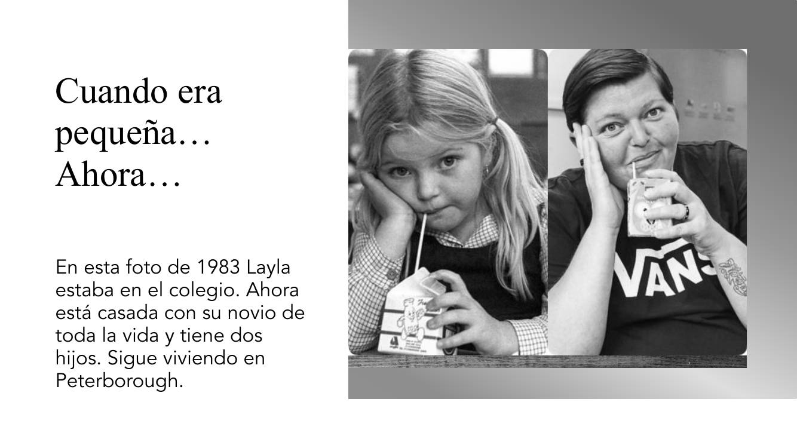
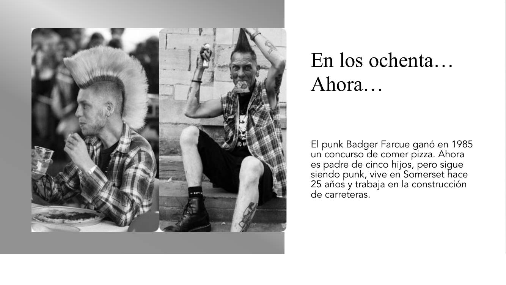

← Все материалы
Las fotos de Chris Porsz
Antes y ahora · imperfecto, presente, seguir + gerundio · PDF

De la moda punk a la actualidad
Chris Porsz es un paramédico británico que, en sus ratos libres, se dedica a la fotografía. Desde finales de los años 70, recorrió la región de Peterborough (Inglaterra) retratando a los vecinos de la zona. Ahora, después de rastrear, con ayuda de las redes sociales y de los medios locales, a los espontáneos modelos de sus imágenes ha registrado más de un centenar de reencuentros, que ahora recopila en un libro titulado Reunions.

Cuando eran jóvenes… Ahora…
¿Quién era esta pareja que se despedía con un beso en la estación de tren de Peterborough? Era 1980. Sally tenía 21 años y vivía en Stafford. Tony era un profesor de 22 que trabajaba en Essex. Ahora ambos son directores de escuela, están casados y tienen dos hijos, Jenny y Tom, de edad similar a la que tenían ellos cuando posaron sin saberlo para esta foto.

Antes… Ahora…
Tina y Doug eran novios en 1985; en esa foto estaban cerca de la catedral de la ciudad. Ahora tienen gemelos, pero ya no son pareja.

Cuando tenían 15 años… Ahora…
En esta foto Andy Jackson, Richard Hillson, Devinder Singh, Tony James y Aaron Meadows eran compañeros de escuela y tenían 15. Hoy siguen siendo amigos.

En aquella época… Ahora…
Emma y Anna Hankins tenían 13 y 11 años respectivamente y posaron explotando una pompa de chicle en 1980. Actualmente ambas son peluqueras, están casadas y tienen hijos.

Cuando era pequeña… Ahora…
En esta foto de 1983 Layla estaba en el colegio. Ahora está casada con su novio de toda la vida y tiene dos hijos. Sigue viviendo en Peterborough.

En los ochenta… Ahora…
El punk Badger Farcue ganó en 1985 un concurso de comer pizza. Ahora es padre de cinco hijos, pero sigue siendo punk, vive en Somerset hace 25 años y trabaja en la construcción de carreteras.
Recuerda
antes + pretérito imperfecto
ahora + presente
seguir + gerundio: para hablar de una acción o de una característica que NO ha cambiado, en la que se observa una continuidad.
Badger sigue llevando camisas de cuadros.
Para comentar
Después de leer los textos, comenta con tu compañero o con tu compañera cómo eran antes y cómo son ahora estas personas, qué tipo de cambios ves en ellas.
- ¿Qué tipo de ropa llevaban antes?
- ¿Cómo eran físicamente?
- ¿Cómo llevaban el pelo?
- ¿Parecían simpáticos, serios, tímidos…?
- ¿Y ahora?